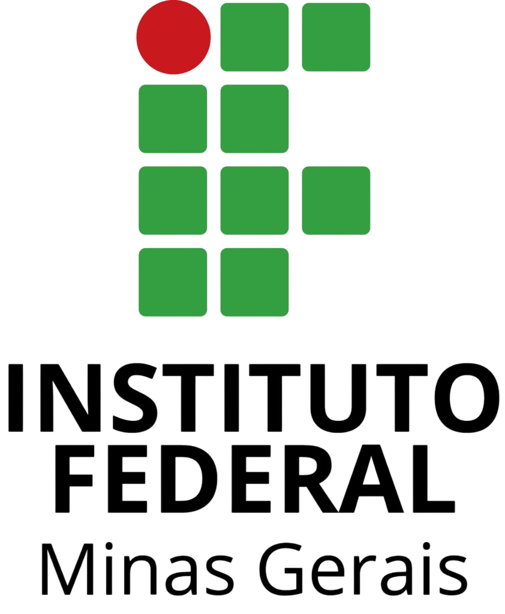

Site institucional
Desenvolvimento de um site institucional com layout responsivo.
Sou desenvolvedor web em formação, atualmente cursando Análise e Desenvolvimento de Sistemas, com foco em desenvolvimento de aplicações web modernas, funcionais e bem estruturadas.
Tenho experiência no desenvolvimento de sites institucionais utilizando HTML, CSS, JavaScript e PHP, buscando sempre aplicar boas práticas de organização de código, estrutura semântica e interfaces claras para o usuário.
Também possuo experiência profissional no setor florestal, o que me proporcionou uma visão prática sobre processos empresariais, organização e responsabilidade. Essa vivência contribui diretamente para a forma como desenvolvo soluções tecnológicas: priorizando eficiência, simplicidade e utilidade real.
Desenvolvimento de um site institucional com layout responsivo.
Tecnologias utilizadas no desenvolvimento de soluções modernas, com foco em performance, organização e escalabilidade.
Experiência no desenvolvimento de aplicações completas, desde a interface até a integração com backend e banco de dados.
Soluções digitais desenvolvidas para melhorar a presença online, performance e resultados do seu negócio.
Criação de sites modernos, rápidos e responsivos, adaptados para todos os dispositivos.
Desenvolvimento de sistemas personalizados para automação de processos e gestão de dados.
Melhoria de velocidade e desempenho para garantir melhor experiência do usuário e SEO.
Desenvolvo sites e sistemas sob medida, com foco em performance, design moderno e resultados reais para o seu negócio.
Solicitar orçamentoAo longo da minha jornada de aprendizado em tecnologia, tenho buscado constantemente aprimorar minhas habilidades por meio de cursos e certificações em desenvolvimento web, programação e ferramentas utilizadas no mercado.
Instituto Federal de Santa Catarina
Atuação em processos biotecnológicos, incluindo manipulação de organismos, técnicas laboratoriais e aplicação de métodos científicos em áreas como saúde, meio ambiente e indústria.
Ver certificadoInstituto Federal de Santa Catarina
Suporte em rotinas laboratoriais de química e biologia, com preparo de amostras, organização de materiais, execução de experimentos e correção de normas de segurança.
Ver certificadoInstituto Federal do Rio Grande do Sul
Gerenciamento e manutenção de bancos de dados, incluindo modelagem, otimização de consultas, segurança da informação e garantia de integridade e disponibilidade dos dados.
Ver certificado
Instituto Federal de Minas Gerais
Desenvolvimento avançado em Python, com foco em automação, manipulação de dados, boas práticas de código e utilização de bibliotecas modernas para soluções eficientes.
Ver certificadoInstituto Federal de Minas Gerais
Operação e programação de sistemas automatizados, envolvendo lógica de controle, integração de dispositivos e monitoramento de processos industriais.
Ver certificadoInstituto Federal de Minas Gerais
Análise de grandes volumes de dados utilizando técnicas de Big Data e mineração de dados, com foco em extração de padrões, insights e suporte à tomada de decisão.
Ver certificadoInstituto Federal de Minas Gerais
Desenvolvimento de aplicações mobile, com foco em interfaces responsivas, experiência do usuário e integração com APIs e serviços externos.
Ver certificadoEmbrapa
Aplicação de técnicas cromatográficas para separação e análise de substâncias, com foco em precisão, controle de qualidade e interpretação de resultados laboratoriais.
Ver certificado